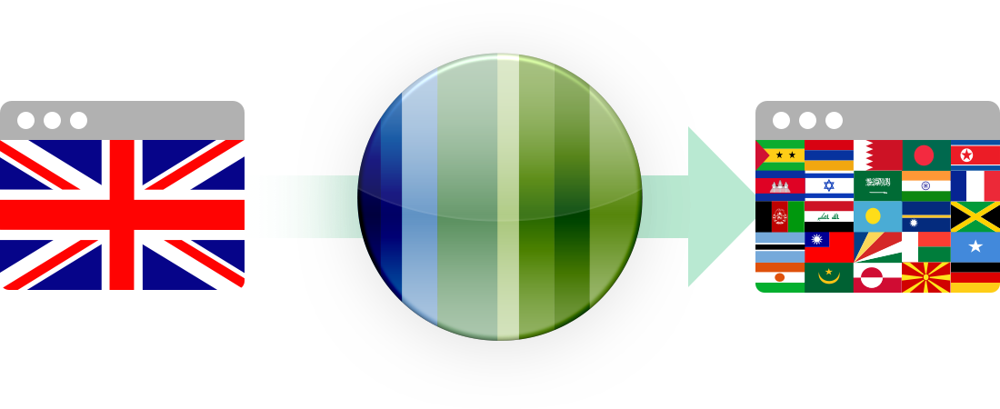

Tolq began life with a simple question, “how to speak the world?” Making translation a simple process would make it easier for businesses to tap in to new markets they didn't think possible.
Traditional website translation requires you to write down all the phrases you want translated, find a translator and give them the phrases, wait for them to translate them, and hope they have returned translated phrases of high quality.
Tolq does away with all of that. Simply enter your URL and Tolq scans your website for phrases and connects those to translators in an easy to use interface. With the added security of all translations being peer reviewed.
Tolq is essentially two apps in one. The flows for customers needing their websites translated is very different to that of translators completing the translations. There was a need to think in two different mindsets when designing.
Being this complex, I needed a way to clearly show the developers on the team how everything pieced together. Interactive prototypes were the way to go. This was in a time before tools like InVision, so I designed and prototyped within Fireworks.
The logo of Tolq is designed to evoke the feeling of being global, the whole pitch of the service. The globe, which is the centre piece of the logo, is designed to resemble a flag to further reinforce the concept.
I had also started a redesign of the Tolq art direction to give it a more modern look and feel and to bring the colour palette in line with the Tolq brand.